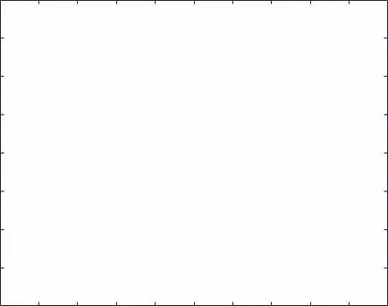

Research seminar notes
Here are some notes from past seminars and lectures given at Colorado State University and Tulane University:
Determinantal Point Processes, invited lecture at Tulane (October 2019).
Random Matrices (and some applications to ML), invited lecture at Tulane (October 2019).
Orthogonal Polynomials and Riemann-Hilbert Problem, invited lecture at Tulane (October 2019).

The Vortex Filament Equation and the Nonlinear Schrödinger equation, notes from the lecture given at the PDELab seminar at CSU (November 2018).
Variational formulation of a PDE, notes from the lecture given at the PDELab seminar at CSU (October 2017).
Conference and tutorial videos
You might have seen me here:
Smallest singular value distribution and large gap asymptotics for products of random matrices, workshop "Six vertex models, dimers, shapes and all that", Simons Center for Geometry and Physics, Stony Brook University (NY), 2016.
"Integrable" gap probabilities for the Generalized Bessel process, conference "Painlevé Equations and Discrete Dynamics", Banff International Research Station (BIRS), Banff (AB), 2016.
A note on the condition numbers of first order optimization, summer workshop "Statistical Physics and Machine Learning", École de Physique des Houches, Les Houches (France), 2020.
Random Matrix Theory for uninitiated (and ML applications), Montréal Machine Learning and Optimization (MTL MLOpt), 2020.
A study on condition numbers for first-order optimization, East Coast Optimization Meeting, George Mason University, Fairfax (VA), 2021.
Rigorous Asymptotics of a KdV Soliton Gas, New horizons in dispersive hydrodynamics, Isaac Newton Institute, Cambridge (UK), 2021.
Convergence Analysis and Implicit Regularization of Feedback Alignment for Deep Linear Networks, Beyond first-order methods in machine learning systems, ICML 2021.
Fredholm Determinant Solutions of the Painlevé II Hierarchy and Gap Probabilities of Determinantal Point Processes, Connections And Introductory Workshop: Universality And Integrability In Random Matrix Theory And Interacting Particle Systems, MSRI, Berkeley (CA), 2021.
The soliton vs. the gas: Fredholm determinants, analysis and finer details, Women in dispersive equations Day, Isaac Newton Institute, Cambridge (UK), 2022.
The dynamics of random KdV solitons and gasses, Applied Math Colloquium, Fields Institute, Toronto (ON), 2022.